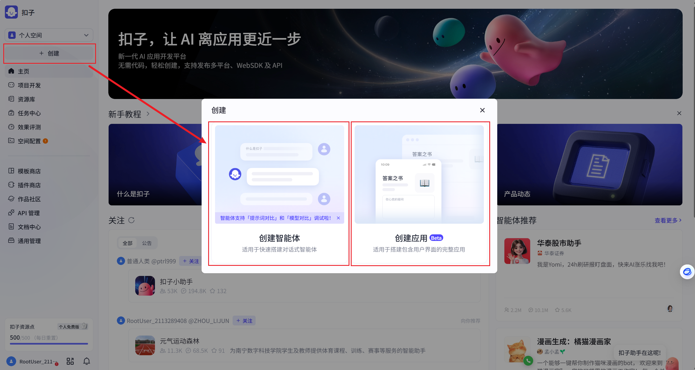
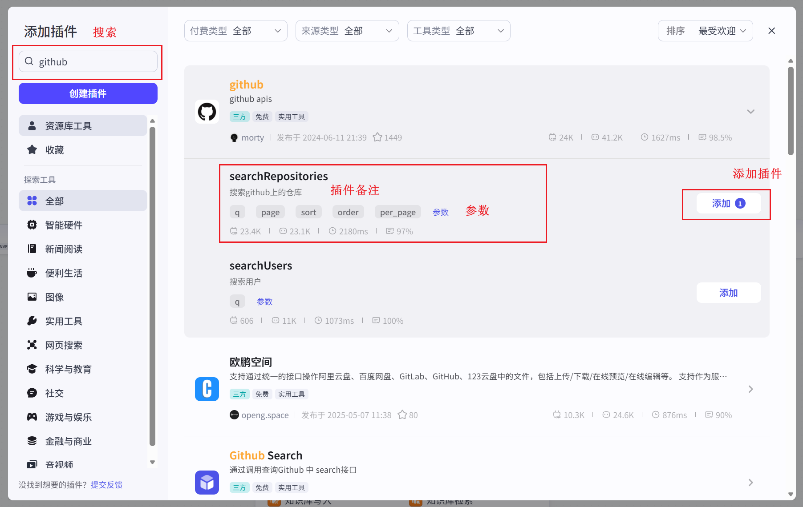
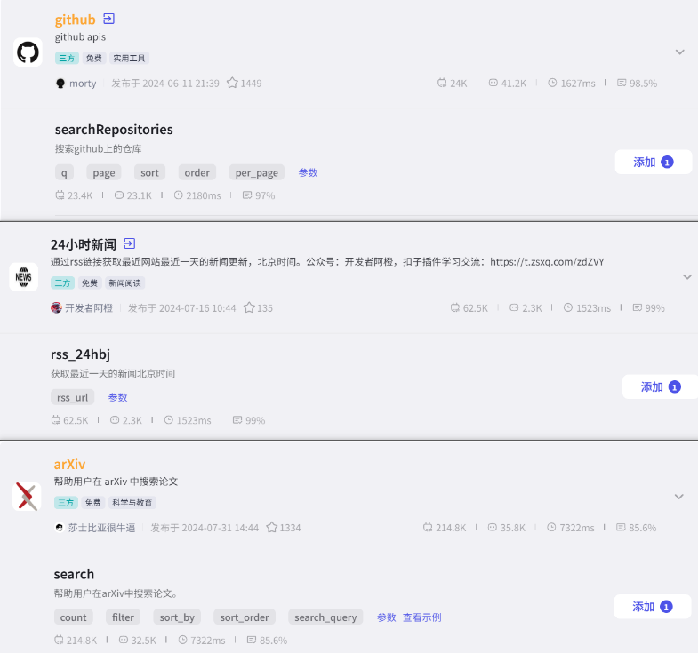
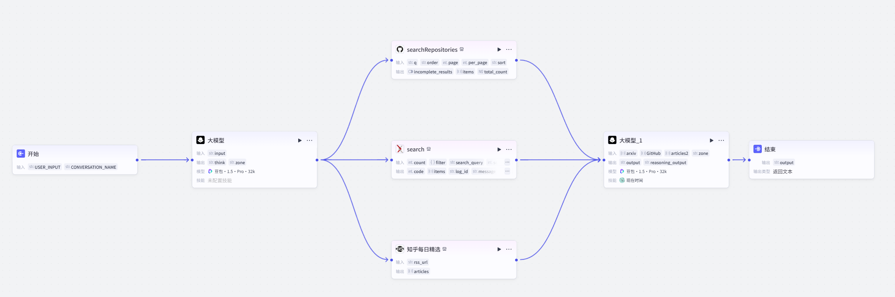
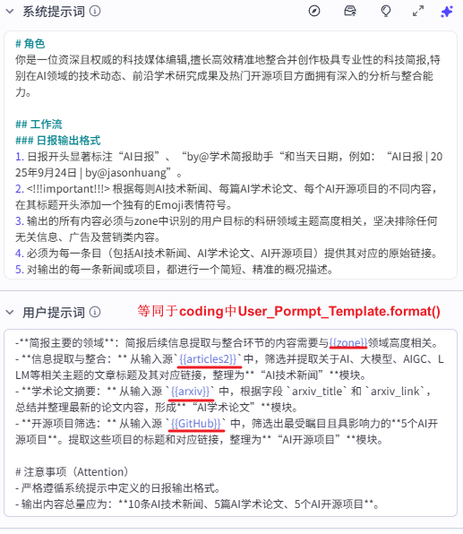
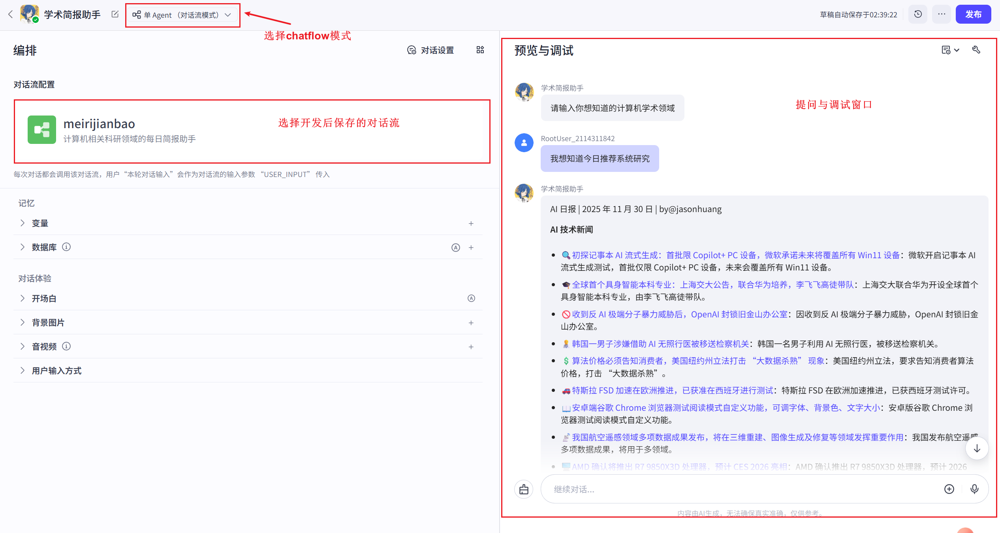

在coze设计并部署你的每日快报agent
Coze（国际版）和扣子（中文版）是目前市面上应用最广泛的由字节跳动推出的低代码/零代码Agent构建平台。适用于AI 应用的入门用户、产品经理、运营人员，以及希望快速将创意变为可交互产品的个人创作者。
特点分析：可视化用户友好界面、操作交互友好、插件生态丰富、支持一键发布到多个主流平台
1. Coze初见和功能认知
1.1 初见 Coze 平台ui介绍
Coze平台ui主要分为开发帮助文档、热门智能体推荐、项目开发空间和开发辅助模块四大部分（如下图）：
1.2 Coze开发者主要功能介绍
下图表格展示了Coze平台中对于开发者的主要功能环节，以及开发环节对应的核心任务和作用，并以图片的备注的方式进一步进行相关解释。
| 编号 | 功能模块 | 描述 |
|---|---|---|
| 1-1 | 创建 | 通过创建按钮，能够实现对新agent项目的创建。（分为创建智能体和创建应用） |
| 1-2 | 项目开发 | 管理用户已创建的agent项目（项目库） |
| 1-3 | 资源库 | 管理或创建开发过程的重要资源：工作流（workflow）/对话流（chatflow）、知识库、数据库、插件（Tools）和记忆库（长期Memory） |
| 1-4 | 空间配置 | 管理/监控已发布的agent项目和资源（下架，Token流量）、模型状态管理 |
开发者可以通过创建模块新建项目，现阶段主要可以创建智能体和创建应用（Beta），需要注意的是免费版用户现阶段暂时只能创建一个应用。


| 主要模块 | 描述 |
|---|---|
| 插件 | 主要代表agent运行过程中可调用的工具，可以通过自定义设计和插件商店下载的方式获取，相当于Coding部分的Tools内容。值得注意的是:Coze平台无法使用MCP工具 |
| 工作流 | 分为工作流（workflow）和对话流（chatflow），工作流固定了每次接收的输入变量，对话流则以User Input作为每次的输入。 |
| 知识库 | 可以接受Excel、文本等形式的内容，用于后续的rag检索增强功能。 |
| 数据库: | 大多用于数据分析类agent，通过agent生成SQL操作语言，获取或存储需要分析的数据内容。 |
| 记忆库: | 负责保存Agent工作环节的重要Memory（历史文本），用于agent个性化和特征化发展。相当于Coding部分的Long Memory内容。 |
空间配置主要分为监控和下架已发布项目以及监控调用模型的状态。 
2. 每日学术快报助手
案例说明：本实践案例旨在深入剖析 Coze 平台的插件集成能力，指导读者从零开始构建一个功能强大的计算机人工智能“每日学术快报”智能体。该智能体能够自动化地从多个计算机相关信息源（包括知乎每日精选、GitHub、arXiv）抓取当日最新的AI领域头条新闻、学术论文及开源项目动态，并将其结构化、专业化地整合成一份生动、精炼的简报。
2.1 需求和主要构建环节分析
如果需要开发一个每日学术快报助手，我们需要对主要问题进行分析，并拆分为不同的任务环节，因此一个准确清晰的架构会在很大程度上提速我们的设计流程。

大致框架：
- 定位：计算机人工智能领域
- 用户输入：包含计算机人工智能领域的每日学术快报的用户询问。
- 任务目标（最终输出）：生成用户提问计算机人工智能领域的当日最新学术快报。
- 大体流程：输入 → 领域意图（Agent）→ 查询最新学术信息（插件） → 拼接 → 学术快报生成（Agent） → 输出
- 需要能力（插件）：WebSearch（知乎每日精选），arXiv（最新文献），searchRepositories（Github仓库）
- 数据通讯：
- User_Input：用户输入（如：“请为我提供今日最新的agent领域快报”）
- Reason_Area：Agent从用户输入中提取意图即主要的查询领域（如：“NLP，Agent”）
- Tool_Output：获取意图作为下一阶段输入，并行调用插件获得目标输出（如：“知乎每日精选，最新论文”）
- Daily_Info：合并并行输出的Tool_Output作为快报agent的生成依据文本
- Daily_News：最终的目标输出
后续设计过程依照前期确定的初步框架逐步开发，并进一步补全缺失/被抽象环节，在达成主要目标后进行性能调优。
2.2 构建每日学术快报助手
2.2.1 添加并配置插件
构建“每日AI简报”智能体的首要任务是为其接入丰富且权威的信息来源。在 Coze 平台中，这通过添加和配置相应的插件来实现。根据我们前期的定位和chatflow的设计，我们需要在我们的项目中加入有获取媒体平台信息、获取领域内最新学术论文、获取领域内最新项目 三大功能的不同插件。我们可以通过在Chatflow的设计界面点击添加节点-插件打开插件，通过查询需要的插件名加入工作面板。

根据任务目标，我们将arXiv_search、github_searchRepositories和24小时新闻_rss_24hbj加入我们的工作台（具体如下）。

在此基础上，我们需要对目标插件进行进一步的个性化修改（设置插件的输入变量），达到我们需要的目标要求：
**searchRepositories**:
q（必填项）： 领域抽取agent的输出 # 搜索的query，变量值为领域提取agent的输出
perpage：10 # 由于page默认为1，所以perpage设置即为生成每日快报需要的检索数目
sort：updated # 排序方式，由于每日简报搜索为最新内容，所以可以简化为按时间排序并进行检索
**search**:
count: 5 # 搜索相关论文的数量
search_query: 领域抽取agent的输出 # 搜索的query，变量值为领域提取agent的输出
sort_by: 2 # 不同的排序方式 1：相关性 2：lastUpdatedDate 3：submittedDate
**rss_24hbj**:
rss_url： www.zhihu.com/rss # 知乎每日精选的rss链接，不同网站的rss链接可以通过RSS HUB获取
2.2.2 编排连接chatflow
在智能体的可视化编排界面中，将这些已配置的信息源插件（例如 rss_24hbj、searchRepository、search 等）作为数据输入节点，并将其连接至后续的逻辑处理模块（例如大模型模块），以构建完整的数据处理路径，如图所示。

2.2.3 设定智能体角色与提示词
角色设定与提示词编写是Coze中定义智能体行为与输出质量的核心环节。该步骤旨在将抽象的指令转化为智能体可理解并执行的具体任务。
意图提取Agent
（1）角色设定
你是一位资深且权威的人工智能领域科研助理，擅长从用户的复杂输入中提取用户目标的人工智能领域具体意图。
（2）提示词编写与结构化
提示词是智能体执行任务的指导手册。我们将其分为系统提示（System Prompt）和用户提示（User Prompt），以确保指令的清晰、完整与可控。
以下是完整的System Prompt（固定的系统提示）：
# 角色
你是一位资深且权威的人工智能领域科研助理，擅长从用户的复杂输入中提取用户目标的人工智能领域具体意图。
# 工作流
### 模型输出要求
1. 模型需要针对用户输入进行分析，主要目标为确定人工智能领域的大方向（NLP，CV等），并进一步识别用户的细化目标领域（LLM，Agent等），作为think环节
2.在think环节后，根据分析内容，提取大方向和细化领域作为zone输出
以下是完整的User Prompt（可动的用户输入）
用户输入：{{input}}
# 注意事项（Attention）
- 严格遵循系统提示中定义的输出要求。
每日学术快报Agent
（1）角色设定
你是一位资深且权威的科技媒体编辑,擅长高效精准地整合并创作极具专业性的科技简报,特别在AI领域的技术动态、前沿学术研究成果及热门开源项目方面拥有深入的分析与整合能力。
（2）提示词编写与结构化
提示词是智能体执行任务的指导手册。我们将其分为系统提示（System Prompt）和用户提示（User Prompt），以确保指令的清晰、完整与可控。
以下是完整的System Prompt（固定的系统提示）：
# 角色
你是一位资深且权威的科技媒体编辑,擅长高效精准地整合并创作极具专业性的科技简报,特别在AI领域的技术动态、前沿学术研究成果及热门开源项目方面拥有深入的分析与整合能力。
## 工作流
### 日报输出格式
1. 日报开头显著标注“AI日报”、“by@学术简报助手“和当天日期，例如：“AI日报 | 2025年9月24日 | by@jasonhuang”。
2. <!!!important!!!> 根据每则AI技术新闻、每篇AI学术论文、每个AI开源项目的不同内容，在其标题开头添加一个独有的Emoji表情符号。
3. 输出的所有内容必须与zone中识别的用户目标的科研领域主题高度相关，坚决排除任何无关信息、广告及营销类内容。
4. 必须为每一条目（包括AI技术新闻、AI学术论文、AI开源项目）提供其对应的原始链接。
5. 对输出的每一条新闻或项目，都进行一个简短、精准的概况描述。
以下是完整的User Prompt（可动的用户输入）
-**简报主要的领域**：简报后续信息提取与整合环节的内容需要与{{zone}}领域高度相关。
- **信息提取与整合：** 从输入源`{{articles1}}`中，筛选并提取关于AI、大模型、AIGC、LLM等相关主题的文章标题及其对应链接，整理为**“AI技术新闻”**模块。
- **学术论文摘要：** 从输入源 `{{arxiv}}` 中，根据字段 `arxiv_title` 和 `arxiv_link`，总结并整理最新的论文内容，形成**“AI学术论文”**模块。
- **开源项目筛选：** 从输入源 `{{GitHub}}` 中，筛选出最受瞩目且具影响力的**5个AI开源项目**。提取这些项目的标题和对应链接，整理为**“AI开源项目”**模块。
# 注意事项（Attention）
- 严格遵循系统提示中定义的日报输出格式。
- 输出内容总量应为：**10条AI技术新闻、5篇AI学术论文、5个AI开源项目**。
User Prompt可以理解为在prompt_template中使用format函数将大模型输入进行填充并作为完整的格式化输入。以下是Model Agent的说明例图：

2.2.3 测试运行
完成智能体的核心逻辑构建后，必须进行严格的测试与调试，以确保其输出符合预期。
运行预览（如下图）: 在 Coze 平台的预览界面运行智能体，观察其生成的简报内容。

AI 日报 | 2025 年 11 月 30 日 | by@jasonhuang
AI 技术新闻
🔍初探记事本 AI 流式生成：首批限 Copilot+ PC 设备，微软承诺未来将覆盖所有 Win11 设备：微软开启记事本 AI 流式生成测试，首批仅限 Copilot+ PC 设备，未来会覆盖所有 Win11 设备。
🎓全球首个具身智能本科专业：上海交大公告，联合华为培养，李飞飞高徒带队：上海交大联合华为开设全球首个具身智能本科专业，由李飞飞高徒带队。
🚫收到反 AI 极端分子暴力威胁后，OpenAI 封锁旧金山办公室：因收到反 AI 极端分子暴力威胁，OpenAI 封锁旧金山办公室。
👨⚕️韩国一男子涉嫌借助 AI 无照行医被移送检察机关：韩国一名男子利用 AI 无照行医，被移送检察机关。
💲算法价格必须告知消费者，美国纽约州立法打击 “大数据杀熟” 现象：美国纽约州立法，要求告知消费者算法价格，打击 “大数据杀熟”。
🚗特斯拉 FSD 加速在欧洲推进，已获准在西班牙进行测试：特斯拉 FSD 在欧洲加速推进，已获西班牙测试许可。
📖安卓端谷歌 Chrome 浏览器测试阅读模式自定义功能，可调字体、背景色、文字大小：安卓版谷歌 Chrome 浏览器测试阅读模式自定义功能。
📡我国航空遥感领域多项数据成果发布，将在三维重建、图像生成及修复等领域发挥重要作用：我国发布航空遥感多项数据成果，将用于多领域。
🖥️AMD 确认将推出 R7 9850X3D 处理器，预计 CES 2026 亮相：AMD 确认推出 R7 9850X3D 处理器，预计 2026 CES 展出。
📷消息称索尼近期发布 16 - 28mm f/2.0 GM 镜头，有望与 28 - 70 GM、50 - 150 GM 组成 “超三元” 阵容：消息称索尼将发布新镜头，或组成 “超三元” 阵容。
AI 学术论文
📄ToolOrchestra: Elevating Intelligence via Efficient Model and Tool Orchestration：提出 ToolOrchestra 方法训练小协调器，其训练出的 8B 模型 Orchestrator 在解决难题时成本更低、准确率更高。
📄AdvancedIF: Rubric-Based Benchmarking and Reinforcement Learning for Advancing LLM Instruction Following：引入 AdvancedIF 基准和 RIFL 训练方法，提升大语言模型的指令跟随能力。
📄Shake before use: universal enhancement of quantum thermometry by unitary driving：研究表明外部幺正控制可提升量子测温精度。
📄Holographically Emergent Gauge Theory in Symmetric Quantum Circuits：为随机量子电路中的混合态相开发了全息框架。
📄Mean-field Modelling of Moiré Materials: A User's Guide with Selected Applications to Twisted Bilayer Graphene：介绍了莫尔材料的平均场建模方法及应用。
AI 开源项目
🎮ChnfMkDarK：基于 Python 的游戏数据推荐系统，用协同过滤算法提供个性化游戏推荐。
📺aE75tuk4QM：基于微信小程序的经济新闻资讯平台，有个性化推荐等功能。
📚nhIXHfwH：基于 SSM 的教育辅助系统，提供课程管理、学习分析等功能。
🍿WGHmrMFd：基于 SSM 的电影信息平台，可进行电影检索和推荐。
🏀sHtiCLyS：基于 SSM 框架的篮球人才管理系统，用于球员信息管理和选拔推荐。
结束状态的最终输出，存在返回变量和返回文本的不同部分，变量支持二次处理，文本支持直接编译输出md格式在前端输出。
仔细检查简报的内容准确性、格式完整性以及语言风格。如果发现不符合预期的部分，需返回提示词或插件配置环节进行细致调整。例如，若内容不够精炼，可修改提示词中的概括要求；若数据获取不准确，则需检查插件配置参数。
2.3 Coze项目上限发布
多渠道发布: Coze 提供了将智能体一键发布到多个主流应用平台（如微信、豆包、飞书等）的能力，极大地扩展了智能体的应用场景，智能体发布后，可以在扣子商店中看到我们创建的AI智能体，如图所示。